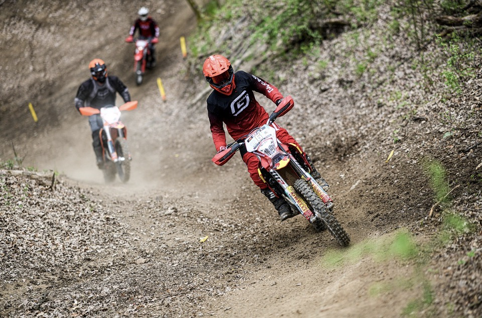

Značka, která žije pro vzrušení z jízdy.

Značka GasGas dnes reprezentuje jednu z nejživějších a nejvýraznějších identit ve světě jedné stopy. Ačkoliv byla v minulosti vnímána především jako specializovaný španělský výrobce trialových speciálů pro úzkou skupinu nadšenců, její současná tvář je mnohem univerzálnější a globálnější. Po svém začlenění do rakouského koncernu Pierer Mobility Group, pod který spadají také značky KTM a Husqvarna, prošel GasGas zásadní transformací a stal se plnohodnotným hráčem na trhu s terénními i silničními motocykly.
Hlavní filozofií značky je přinášet lidem čistou radost z jízdy, což se odráží v jejím energickém mottu „Get on the Gas!“. Na rozdíl od technicky chladné Husqvarny nebo ryze závodně orientované KTM se GasGas prezentuje jako přístupnější, mladistvější a tak trochu rebelsky laděná značka. Typická ostře červená barva jejích strojů neevokuje pouze agresivitu, ale také španělskou vášeň, hravost a komunitního ducha. Tento uvolněný a přátelský přístup k marketingu i zákazníkům pomáhá značce oslovovat mladší generaci jezdců a lidi, kteří hledají špičkovou techniku, ale nechtějí se brát příliš vážně.
Z produktového hlediska těží GasGas z obrovského technologického zázemí své mateřské skupiny. Jeho motokrosové, endurové a cross-country modely sdílejí osvědčené motory, podvozky a komponenty s motocykly KTM, což zákazníkům zaručuje absolutní spolehlivost, obrovský výkon a skvělou dostupnost náhradních dílů. Přesto si GasGas zachovává specifické naladění a často i mírně odlišné komponenty, což z něj dělá cenově o něco dostupnější, ale stále stoprocentně konkurenceschopný stroj. Výroba těchto modelů se sice přesunula do rakouského Mattighofenu, avšak srdce značky v podobě vývoje a produkce čistokrevných trialových speciálů zůstalo věrné své domovině ve španělské Gironě.
V posledních letech navíc značka výrazně expandovala mimo své tradiční off-roadové teritorium. Do jejího portfolia přibyla úspěšná řada elektrických horských kol (e-bikes), dětská elektrická odrážedla a také silniční jednoválcové motocykly pro běžný provoz, které kombinují styl supermota a cestovního endura. GasGas se tak proměnil v moderní lifestylovou značku, která dokáže nabídnout zábavu na dvou kolech prakticky komukoliv – od dětí na zahradě přes víkendové jezdce v lesích až po profesionály bojující o sekundy na tratích mistrovství světa.